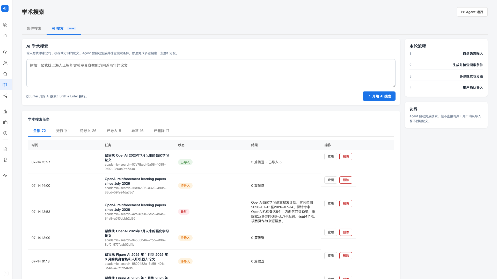
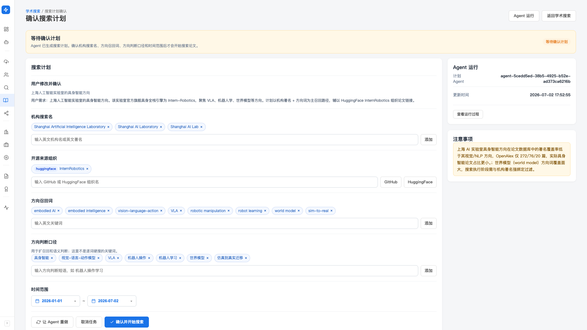
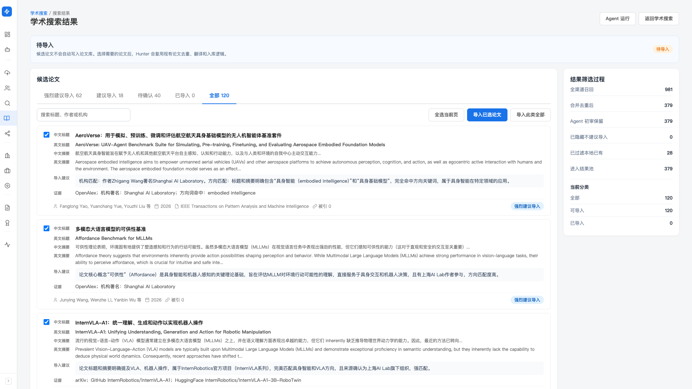

学者主题
你只说一句话——「帮我找某机构某方向近两年的论文」——剩下的交给 Agent。 它会自己生成并自检一套搜索方案（机构英文署名、方向召回词、时间范围）， 再跑多源检索、去重、分级，最后给你一批带「建议导入」标注的候选论文。 你只挑值得的导入，导入后论文自动关联到候选人。
产品里对应左侧「寻访（找人）」分组下的「学术搜索」—— 进页面后顶部有两个标签页：「条件搜索」和「AI 搜索」（Beta）。 本篇讲的是「AI 搜索」这个自主寻访流程。
AI 学术搜索目前处于 Beta 阶段，能力还在打磨中—— 机构识别、来源覆盖和分级准确度都在持续完善，偶尔会遇到方向判断偏、来源临时不可用或漏抓的情况。 Agent 只负责搜索和分级，不会自动写库；候选论文都先放在结果池里， 由你确认导入后才进论文库，可以放心试用。用下来有问题或建议，欢迎随时反馈给我们。
和「条件搜索」有什么区别
同一个「学术搜索」页里有两个标签页，解决的是两种不同的场景：
- 条件搜索（见 学术 & 专利）： 你已经明确知道要搜哪家机构（英文名）、什么日期区间、加不加关键词， 填完表单直接跑，抓到的论文直接入库。适合「我就是要 ByteDance 今年的论文」这类精确检索。
- AI 搜索（本篇）： 你只有一个模糊的主题，比如「上海某实验室的具身智能」—— 机构该用哪个英文署名、方向该用哪些词、还有哪些开源来源能顺藤摸瓜，你未必都清楚。 Agent 帮你把这套搜索方案先想清楚、再执行，还会对结果分级，让你少看无关论文。
不管走「条件搜索」还是「AI 搜索」，导入的论文都进同一个论文库， 关联候选人时也共用一套数据。所以你不用担心两条路径会各存一份、彼此打架。 论文库、专利、研究方向标签的日常管理，仍在 学术 & 专利 里讲。
整体流程：一句话到一批候选论文
AI 搜索是一条自动流水线，你的介入点很少。从头到尾是这四步：
-
自然语言输入
你在输入框里写清楚要找哪家机构、哪个方向、大概什么时间范围。
-
Agent 生成并自检搜索方案
Agent 先上网确认这家机构的英文署名、旗舰项目、可用的开源来源， 再把这些整理成一套可执行的搜索条件，并跑一遍自检门禁—— 条件不达标不会开跑。
-
多源搜索与分级
按冻结的方案跑多个学术来源，把结果合并去重， 再逐篇判断和目标方向的相关度，标上「强烈建议 / 建议 / 待确认」的分级。
-
你确认导入
结果池里的候选论文不会自动进库。你按分级挑出值得的，点导入—— 导入后走的是和普通论文一样的去重、翻译、入库逻辑，并自动关联到候选人。
「AI 搜索」标签页右侧有一个「本轮流程」小卡片，把上面这四步（自然语言输入 → 生成并检查搜索条件 → 多源搜索与分级 → 用户确认导入）钉在那儿，方便你随时对照现在走到哪一步了。 旁边还有一张「边界」卡片写着：Agent 自动完成搜索，但不直接写库；用户确认导入前不创建论文。
第一步：发起一次 AI 搜索
在「学术搜索」页点顶部的「AI 搜索」标签页，你会看到一个大输入框。
-
在输入框里写清需求
用大白话描述机构 + 方向 +（可选）时间，越具体越准。 例如：
帮我找上海人工智能实验室具身智能方向近两年的论文。 -
按 Enter 开始
按 Enter 直接发起（Shift + Enter 是换行）， 或点右下角「开始 AI 搜索」按钮。
-
页面跳到 Agent 运行过程
提交后会跳到本次任务的 Agent 运行页，你能看到它一步步在做什么。 这就是「Agent 运行中心」里的那条运行记录——不想盯着的话直接离开即可， 它在后台继续跑。

Agent 要先把你的话翻译成「英文机构署名 + 方向召回词」才能搜。 如果你只写「找些大模型的论文」这种没有主体的需求，它没法唯一锁定机构， 会请你补充而不是硬猜。 带上机构全称（中文英文都行）和一个清晰方向，是最省事的写法。
第二步：在任务表里跟踪进度
回到「AI 搜索」标签页，下方的「学术搜索任务」表列出你发起过的每一次 AI 搜索。 上面一排标签页按状态分类，括号里是数量：
- 全部：所有任务
- 进行中：正在生成方案或正在搜索的任务
- 待导入：搜索完成、有候选论文等你挑
- 已导入：你已经导入过论文的任务
- 异常：方案没生成出来、或搜索出错的任务
- 已删除：你删掉的任务（软删除，仍可查看）
每行显示时间、你输入的需求原文、状态徽章、结果摘要和操作。状态徽章的含义：
- 生成计划中：Agent 正在上网调研、拟搜索方案
- 等待确认计划：方案已生成，需要你过一眼再放行（见下一节）
- 搜索中：方案已定，正在多源检索
- 待导入：搜索完成，去看结果池挑论文
- 已导入：这次任务里你已经导过论文
- 异常：计划生成失败或搜索失败，可重做
- 已删除：软删除状态
点某一行的「查看」，会根据状态自动带你去对应页面：还在等确认的进「搜索计划确认」页，已出结果的进「搜索结果」页，还在跑的进 Agent 运行页。
状态还在「生成计划中 / 搜索中」的任务，「删除」按钮是灰的—— 正在跑的东西不能删。等它跑完（或异常）之后再删。 删除是软删除，删掉的任务进「已删除」标签页，已经导入的论文不受影响。
（有时会遇到）第三步：确认搜索计划
多数情况下 Agent 自检通过就直接开搜了，你不用管。 但如果一次搜索需要你先过目再放行，任务会停在「等待确认计划」， 点「查看」进入「确认搜索计划」页。这一页把 Agent 拟好的方案摊开给你， 每一项都能改：
- 机构搜索名：实际拿去搜论文署名的英文机构名/署名，可增删
- 开源来源组织：Agent 判断属于这家机构、且和方向对得上的 GitHub / HuggingFace / 公开网页来源
- 方向召回词：拿去做检索的英文关键词
- 方向判断口径：用于扩召回和语义判断的方向短语（不是逐词硬搜的关键词，而是「怎么算相关」的口径）
- 时间范围：起始日期（默认当年 1 月 1 日）到结束日期（可留空 = 至今），日粒度选择
页面上每类条件都是一个个「标签」，点标签上的「×」删掉，或在下方输入框加新的。改完后底部有三个操作：
-
「确认并开始搜索」（蓝色主按钮）
用你确认后的方案开跑，任务转入「搜索中」。
-
「让 Agent 重做」
对方案不满意 → 让 Agent 重新调研、重拟一版计划。
-
「取消任务」
这次不搜了 → 取消（会让你二次确认）。取消后任务进「已删除」，可在那里查看。

论文署名在全球学术库里几乎都是英文，所以「机构搜索名」这一栏只吃英文—— 中文机构名、网址、GitHub 账号都不算合格的署名。 如果计划页右侧出现「注意事项」提示，通常就是在告诉你哪一项可能识别不准，值得手动核一下再放行。
第四步：在结果池里挑论文导入
任务变成「待导入」后，点「查看」进入「学术搜索结果」页。 页面顶部一句话点明重点：候选论文不会自动写入论文库，选好后才走去重、翻译和入库。
候选论文的分级标签
候选论文按 Agent 判断的相关度分成几档，用标签页切换，括号里是数量：
- 强烈建议导入：和目标机构、目标方向都高度吻合，优先看这批
- 建议导入：相关，值得看
- 待确认：沾边但拿不太准，你自己判断
- 已导入：这次任务里已经进库的（含库里本来就有的「已存在」）
- 全部：以上合计
标签页下方还有个搜索框，可以按标题、作者或机构在当前分类里进一步筛。
每张论文卡片上有什么
每篇候选论文一张卡，信息比普通列表更全，方便你不点开就判断：
- 中文标题 / 英文标题（英文标题可点开原文链接；未翻译时标「尚未翻译」）
- 中文摘要 / 英文摘要
- 导入建议：Agent 为什么把它归到这一档的说明
- 证据：这篇是从哪些来源命中的（帮你判断可信度）
- 作者、年份、发表刊物、被引数，以及右下角的分级/状态徽章
卡片左侧有勾选框——「强烈建议 / 建议」这类默认就帮你勾上了，已经处理过的（已导入/已存在）会置灰不可选。
导入操作
工具栏上三个按钮，配合分级用：
-
「全选当前页」
一键勾上当前页所有可导入的论文。
-
「导入已选论文」（蓝色主按钮）
把你勾选的这些论文导入。会弹窗让你确认导入几篇。
-
「导入此类全部」
懒得逐页勾选时，直接把当前分类下所有待处理论文一次导入 （如果加了搜索词，就是当前搜索条件下这一类的全部）。同样会弹窗确认数量。
点确认后，导入在后台跑，页面上会出现一条进度条：显示已处理 / 总数、 新导入几篇、已存在几篇、失败几篇，以及当前正在处理哪一篇。跑完自动刷新页面。

导入的论文进的是和普通论文同一个论文库——所以它会复用现有逻辑： 去重（库里已有就标「已存在」，不重复建）、按作者名匹配自动关联到候选人。 之后在候选人详情页的「学术成果」里、或论文详情页上，都能看到这层关联，做岗位匹配时也会作为判断维度。
结果是怎么筛出来的（右侧漏斗）
结果页右侧有一张「结果筛选过程」卡片，把这批候选论文从「全网捞回来」到「进结果池」的 每一层数字列出来，让你知道 Agent 都过滤掉了什么：
- 全渠道召回：从各来源一共捞回多少
- 合并去重后：跨来源去掉重复后剩多少
- Agent 初审保留：判断相关、留下的
- 已隐藏不建议导入：判断不相关、直接藏掉的
- 已过滤本地已有：库里本来就有、不再重复呈现的
- 进入结果池：最终摆到你面前的候选数
下面还有「当前分类」的小结：当前标签页有多少、可导入多少、已导入多少。
候选人的学术成果页
论文关联到候选人后，从候选人详情页可以进入这位候选人的「学术成果」页， 把 TA 的论文和专利汇总在一起看：
- 顶部「研究方向」概况：这位候选人涉及几个方向、都是哪些（可点方向 tag 跳到该方向的聚合页）
- 论文 / 专利两个标签页，分别列出关联到 TA 的成果
- 右上角「搜索更多成果」：带着这位候选人跳回学术搜索，继续给 TA 补论文
- 配了翻译能力时，有「全部翻译」把未译的标题/摘要一次翻好
论文进库后，Hunter 会从标题/摘要自动提取研究方向标签。 「学术搜索」页顶部（条件搜索标签页里）和候选人学术成果页上看到的方向 tag， 都指向同一套聚合——点进去能看到该方向下的所有论文和专利。库里论文越多，方向聚合越丰富。
常见提示
通常是没能唯一锁定机构/方向（需求太笼统），或某些来源临时不可用。 进任务点「查看」，如果在计划页，用「让 Agent 重做」重新生成一版； 或回输入框把机构全称和方向写得更明确，重新发起一次。
先只看「强烈建议导入 / 建议导入」两档，「待确认」本来就是拿不准的。 如果整体偏了，多半是方案里的机构署名或方向词不够准—— 下次发起时把机构全称、方向范围写得更收敛，或在计划确认页手动删掉跑偏的召回词再放行。
正常——导入走的是论文库统一的去重逻辑，库里已有的会标成「已存在」而不是重复建一条。 所以进度条里「已存在 N」是预期内的，不用担心把库搞乱。
搜完就去挑一遍、该导的导、不要的任务删掉—— 结果池摊着不处理，下次一堆「待导入」混在一起反而难分辨。 保持「跑一次、挑一次」的节奏，学者主题这条线用起来最顺手。